NASA Space Apps 2026 · NISAR · Informe de cambios
Antelope Valley, California · muestra 2008
2008-10-12 → 2008-11-27 · pista 30, frame 19 · umbral ±3 dB · agua < -15 dB
1. Resumen
Entre el 2008-10-12 y el 2008-11-27 (46 días) se han comparado 6 779 km² con datos válidos en las dos fechas (pista 30, frame 19, órbita ascendente), con el radar NISAR en banda L, polarización HH, a 20 m.
Antes de comparar se ha quitado un desplazamiento global de +4,08 dB, que afecta a toda la escena por igual (humedad general o calibración). Después, el 5,35 % del área (362,4 km²) cambia más de ±3,0 dB. Agrupado, eso da 817 zonas de al menos 0,05 km² que suman 274,1 km².
La clase con más superficie es «Descenso del eco» (285,1 km², 604 zonas). Menos retrodispersión: posible tala, cosecha o suelo más seco.
La zona más grande (z001) es de tipo «Descenso del eco»: 46,69 km² con un cambio medio de −3,9 dB (de −4,4 a −4,2 dB), centrada en 34.6852, -118.1425. Confianza media.
La superficie con aspecto de agua pasa de 4 377,3 a 1 763,4 km² (−2 613,9 km²): 2,9 km² se vuelven agua y 2 616,8 km² dejan de serlo.
La correlación entre las dos imágenes es 0,94, es decir, son muy parecidas: la mayor parte de la escena no cambia.
Un cambio de radar es una señal, no una prueba: conviene contrastarlo con imagen óptica o conocimiento del terreno.
2. Imágenes
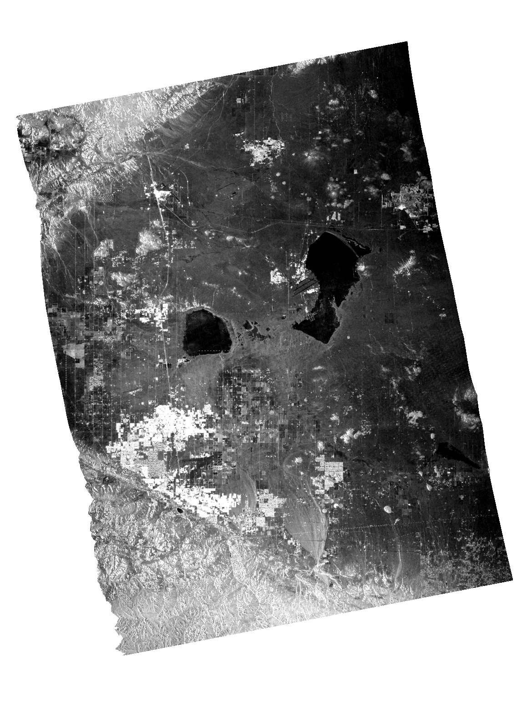
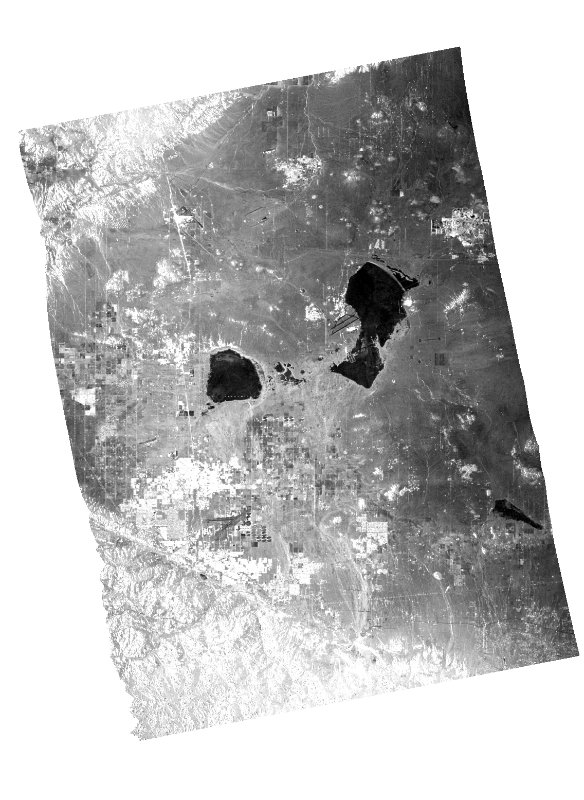
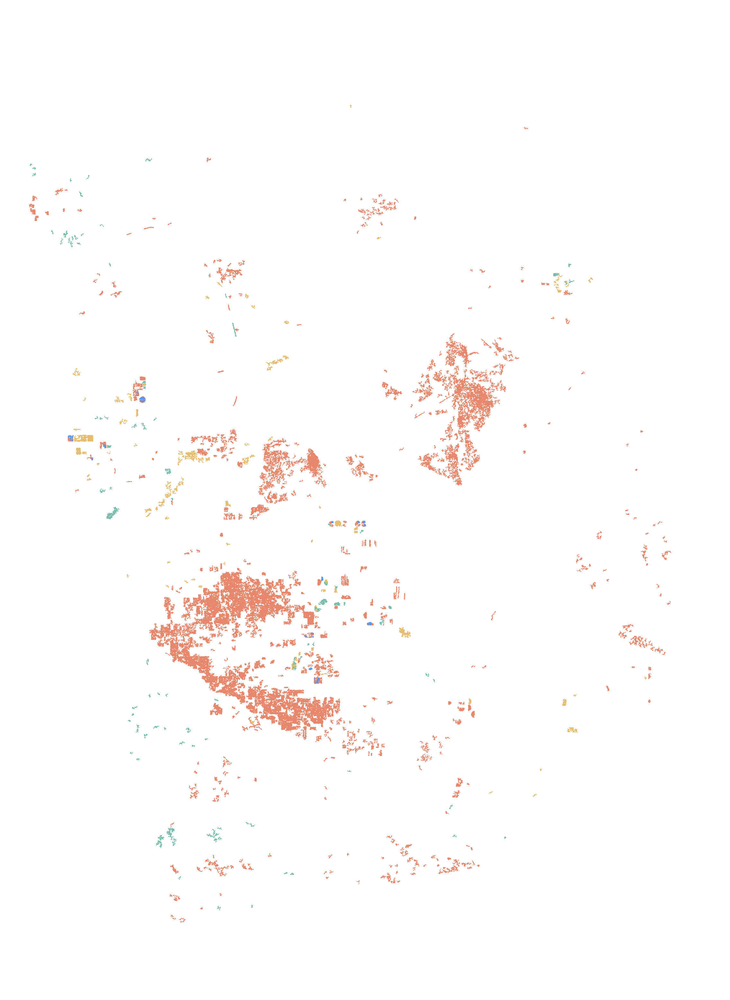
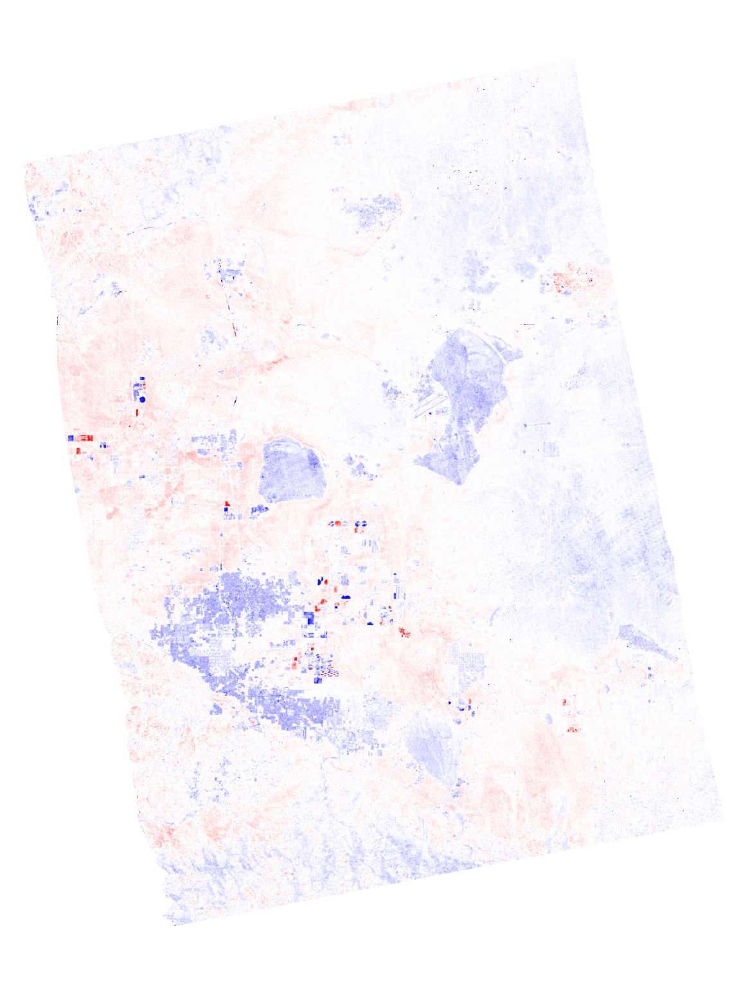
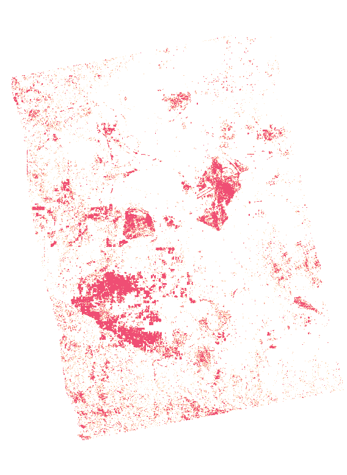
3. Cambios por clase
| Clase | km² | % del área | Zonas | km² en zonas | Lectura posible |
|---|---|---|---|---|---|
| Agua nueva | 2,86 | 0,042 | 17 | 1,88 | Superficie que pasa a reflejar como agua lisa: posible inundación o crecida. |
| Agua que desaparece | 35,80 | 0,528 | 99 | 16,73 | Superficie que deja de ser agua: retirada de una crecida o lago que mengua. |
| Descenso del eco | 285,13 | 4,206 | 604 | 244,23 | Menos retrodispersión: posible tala, cosecha o suelo más seco. |
| Aumento del eco | 38,58 | 0,569 | 97 | 11,28 | Más retrodispersión: vegetación que crece, estructuras o suelo más húmedo. |
Cambio medio -0,12 dB, desviación 1,53 dB. La mitad de los píxeles cambia menos de 0,9 dB, el 90 % menos de 2,5 dB y el 99 % menos de 4,4 dB.
4. Brillo de cada fecha y coberturas radar
Mediana antes -16,5 dB, después -11,5 dB. Lectura aproximada del brillo (no es un mapa de usos del suelo):
| Antes ↓ / Después → | Agua lisa | Superficie lisa o vegetación baja | Vegetación densa | Muy brillante | Total antes |
|---|---|---|---|---|---|
| Agua lisa | 1 760,6 | 2 584,0 | 32,3 | 0,4 | 4 377,3 |
| Superficie lisa o vegetación baja | 2,7 | 678,2 | 1 017,4 | 12,1 | 1 710,5 |
| Vegetación densa | 0,1 | 4,0 | 387,5 | 229,0 | 620,6 |
| Muy brillante | 0,0 | 0,0 | 4,7 | 66,1 | 70,8 |
| Total después | 1 763,4 | 3 266,3 | 1 442,0 | 307,6 |
| Agua lisa | Muy oscuro: el radar rebota lejos como en un espejo. Ríos, lagos, zonas inundadas sin vegetación. |
| Superficie lisa o vegetación baja | Oscuro: suelo desnudo, pastos, cultivos bajos, arena o carreteras. |
| Vegetación densa | Gris medio: bosque o cultivos altos; la banda L entra en la copa y rebota en las ramas. |
| Muy brillante | Muy claro: edificios, bosque inundado (doble rebote agua-tronco) o laderas de cara al radar. |
Balance de agua
Agua antes 4 377,3 km², después 1 763,4 km². Se mantiene 1 760,6 km², aparece 2,9 km² y desaparece 2 616,8 km².
5. Zonas de cambio (817)
| Zona | Clase | km² | Δ medio | Δ extremo | dB antes → después | % agua antes → después | Cobertura | Confianza | Lat, lon |
|---|---|---|---|---|---|---|---|---|---|
| z001 | Descenso del eco | 46,69 | -3,9 | -12,1 | -4,4 → -4,2 | 0 → 0 | Vegetación densa → Vegetación densa | media | 34.6852, -118.1425 |
| z002 | Descenso del eco | 30,38 | -3,9 | -8,1 | -4,0 → -3,9 | 0 → 0 | Vegetación densa → Vegetación densa | media | 34.5671, -118.0720 |
| z003 | Descenso del eco | 25,81 | -4,0 | -9,3 | -5,9 → -5,8 | 0 → 0 | Vegetación densa → Vegetación densa | media | 34.6201, -118.2002 |
| z004 | Descenso del eco | 16,83 | -3,6 | -6,7 | -21,5 → -21,0 | 100 → 100 | Agua lisa → Agua lisa | baja | 34.9124, -117.8295 |
| z005 | Descenso del eco | 6,95 | -3,5 | -7,3 | -20,3 → -19,8 | 100 → 100 | Agua lisa → Agua lisa | baja | 34.8443, -118.0974 |
| z006 | Descenso del eco | 4,36 | -3,5 | -5,9 | -23,0 → -22,4 | 100 → 100 | Agua lisa → Agua lisa | baja | 34.9663, -117.8494 |
| z007 | Descenso del eco | 4,13 | -4,0 | -6,8 | -20,4 → -20,3 | 100 → 100 | Agua lisa → Agua lisa | media | 34.8413, -118.0457 |
| z008 | Descenso del eco | 2,67 | -3,6 | -7,2 | -20,8 → -20,3 | 100 → 100 | Agua lisa → Agua lisa | baja | 34.8515, -117.8550 |
| z009 | Descenso del eco | 2,59 | -5,0 | -10,6 | -8,8 → -9,7 | 0 → 0 | Superficie lisa o vegetación baja → Superficie lisa o vegetación baja | media | 34.6706, -118.0516 |
| z010 | Descenso del eco | 1,93 | -3,4 | -5,0 | -21,4 → -20,7 | 100 → 100 | Agua lisa → Agua lisa | baja | 34.8446, -117.8880 |
| z011 | Descenso del eco | 1,74 | -3,5 | -4,8 | -20,8 → -20,1 | 100 → 100 | Agua lisa → Agua lisa | baja | 34.8677, -117.8356 |
| z012 | Descenso del eco | 1,60 | -4,1 | -7,6 | -5,7 → -5,7 | 0 → 0 | Vegetación densa → Vegetación densa | media | 34.6071, -118.1380 |
| z013 | Agua que desaparece | 1,58 | +5,5 | +9,8 | -18,3 → -8,7 | 99 → 0 | Agua lisa → Vegetación densa | media | 34.8666, -118.3567 |
| z014 | Descenso del eco | 1,53 | -4,7 | -10,0 | -11,9 → -12,5 | 27 → 27 | Superficie lisa o vegetación baja → Superficie lisa o vegetación baja | media | 34.7890, -118.1179 |
| z015 | Descenso del eco | 1,34 | -3,8 | -5,8 | -6,0 → -5,7 | 1 → 0 | Vegetación densa → Vegetación densa | media | 34.6786, -118.2402 |
| z016 | Descenso del eco | 1,26 | -3,5 | -6,0 | -10,3 → -9,7 | 23 → 20 | Superficie lisa o vegetación baja → Superficie lisa o vegetación baja | baja | 34.9214, -117.8927 |
| z017 | Descenso del eco | 1,24 | -4,2 | -7,0 | -8,0 → -8,1 | 0 → 0 | Vegetación densa → Vegetación densa | media | 34.5638, -118.1723 |
| z018 | Descenso del eco | 1,22 | -4,6 | -7,5 | -13,4 → -13,9 | 32 → 28 | Superficie lisa o vegetación baja → Superficie lisa o vegetación baja | media | 34.9212, -118.2862 |
| z019 | Agua que desaparece | 1,13 | +3,6 | +5,5 | -18,0 → -10,3 | 100 → 0 | Agua lisa → Superficie lisa o vegetación baja | baja | 34.8488, -118.2109 |
| z020 | Descenso del eco | 1,05 | -3,3 | -4,6 | -8,1 → -7,4 | 0 → 0 | Vegetación densa → Vegetación densa | baja | 34.3870, -118.1677 |
| z021 | Descenso del eco | 1,04 | -3,8 | -10,9 | -4,0 → -3,8 | 3 → 2 | Vegetación densa → Muy brillante | media | 35.0545, -118.1558 |
| z022 | Descenso del eco | 0,96 | -3,5 | -5,4 | -21,9 → -21,3 | 100 → 100 | Agua lisa → Agua lisa | baja | 34.9389, -117.8741 |
| z023 | Descenso del eco | 0,95 | -3,6 | -6,3 | -6,2 → -5,7 | 1 → 0 | Vegetación densa → Vegetación densa | baja | 34.9223, -117.9372 |
| z024 | Agua que desaparece | 0,89 | +5,6 | +12,8 | -17,3 → -7,6 | 99 → 0 | Agua lisa → Vegetación densa | media | 34.6526, -117.9185 |
| z025 | Descenso del eco | 0,89 | -3,7 | -5,2 | -4,2 → -3,9 | 0 → 0 | Vegetación densa → Vegetación densa | baja | 34.8677, -118.1980 |
| z026 | Aumento del eco | 0,88 | +3,4 | +4,7 | -12,5 → -5,1 | 2 → 0 | Superficie lisa o vegetación baja → Vegetación densa | baja | 34.7826, -118.3174 |
| z027 | Descenso del eco | 0,83 | -3,8 | -6,5 | -20,1 → -19,9 | 100 → 100 | Agua lisa → Agua lisa | media | 34.8033, -118.1003 |
| z028 | Descenso del eco | 0,81 | -3,4 | -4,6 | -20,9 → -20,3 | 100 → 100 | Agua lisa → Agua lisa | baja | 34.8307, -117.8527 |
| z029 | Descenso del eco | 0,80 | -3,8 | -6,2 | -11,5 → -11,3 | 0 → 0 | Superficie lisa o vegetación baja → Superficie lisa o vegetación baja | media | 34.7101, -118.0001 |
| z030 | Descenso del eco | 0,80 | -3,6 | -6,6 | -19,0 → -18,5 | 99 → 99 | Agua lisa → Agua lisa | baja | 34.8369, -117.9809 |
| z031 | Descenso del eco | 0,79 | -4,5 | -7,4 | -13,5 → -13,9 | 33 → 33 | Superficie lisa o vegetación baja → Superficie lisa o vegetación baja | media | 34.6011, -118.0351 |
| z032 | Descenso del eco | 0,77 | -3,5 | -5,3 | -22,3 → -21,7 | 100 → 100 | Agua lisa → Agua lisa | baja | 34.6462, -117.6037 |
| z033 | Descenso del eco | 0,76 | -4,0 | -5,8 | -4,7 → -4,6 | 1 → 1 | Vegetación densa → Vegetación densa | media | 34.6146, -118.1161 |
| z034 | Descenso del eco | 0,75 | -3,5 | -5,0 | -3,2 → -2,6 | 0 → 0 | Vegetación densa → Muy brillante | baja | 34.8618, -118.1676 |
| z035 | Descenso del eco | 0,74 | -3,5 | -5,3 | -20,2 → -19,6 | 100 → 100 | Agua lisa → Agua lisa | baja | 34.8163, -118.1055 |
| z036 | Descenso del eco | 0,73 | -3,4 | -4,7 | -22,0 → -21,3 | 100 → 100 | Agua lisa → Agua lisa | baja | 34.9414, -117.8158 |
| z037 | Descenso del eco | 0,71 | -3,6 | -7,5 | -3,0 → -2,5 | 0 → 0 | Muy brillante → Muy brillante | baja | 34.8718, -118.1545 |
| z038 | Descenso del eco | 0,70 | -4,1 | -12,0 | -0,8 → -0,8 | 0 → 0 | Muy brillante → Muy brillante | media | 35.0519, -118.1722 |
| z039 | Descenso del eco | 0,69 | -3,7 | -5,1 | -3,6 → -3,2 | 0 → 0 | Vegetación densa → Muy brillante | baja | 34.8529, -118.1961 |
| z040 | Descenso del eco | 0,69 | -4,1 | -7,6 | -12,2 → -12,3 | 3 → 0 | Superficie lisa o vegetación baja → Superficie lisa o vegetación baja | media | 34.6128, -118.0326 |
Se muestran 40 de 500 zonas listadas. Todas están en zonas.csv y zonas.geojson.
Fichas de las zonas mayores (recortes a 20 m)
z001 · Descenso del eco — 46,69 km², Δ -3,9 dB, confianza media. Recorte de 10.2 km.
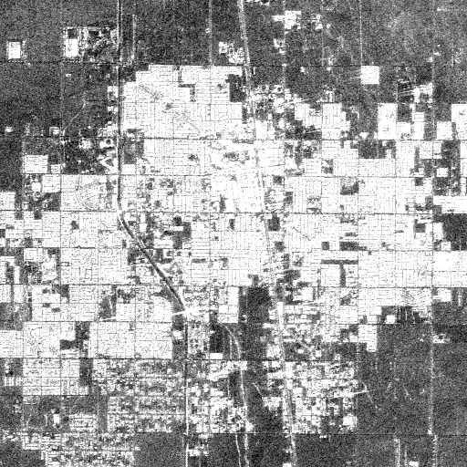
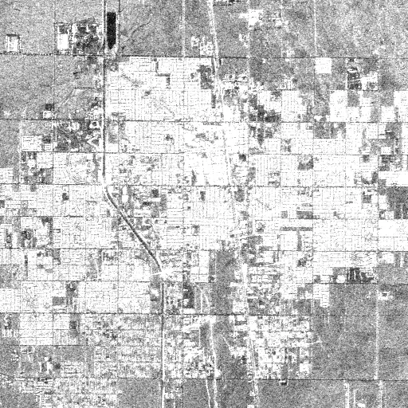
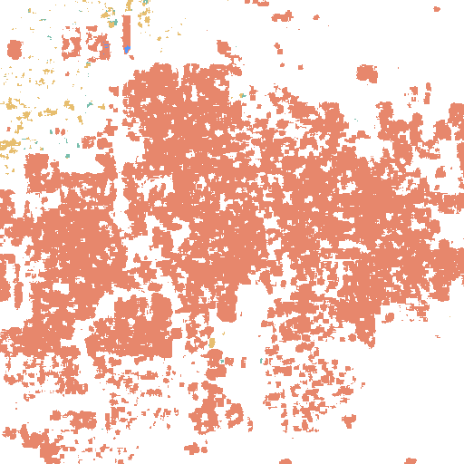
z002 · Descenso del eco — 30,38 km², Δ -3,9 dB, confianza media. Recorte de 10.2 km.
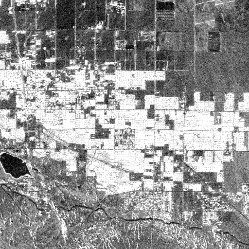
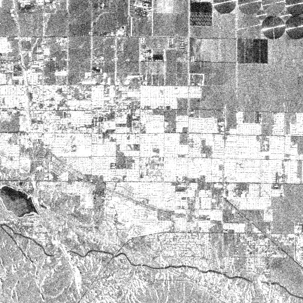
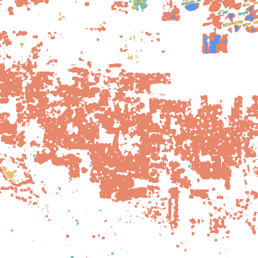
z003 · Descenso del eco — 25,81 km², Δ -4,0 dB, confianza media. Recorte de 10.2 km.
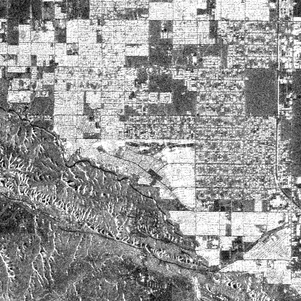
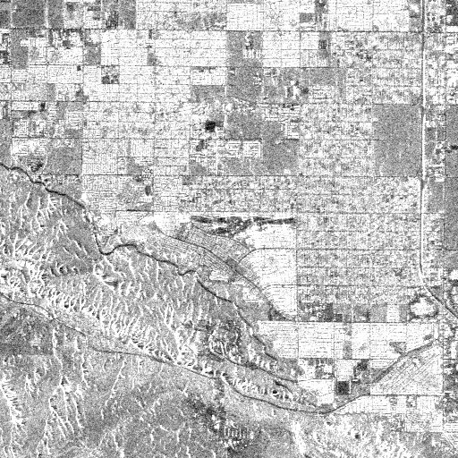
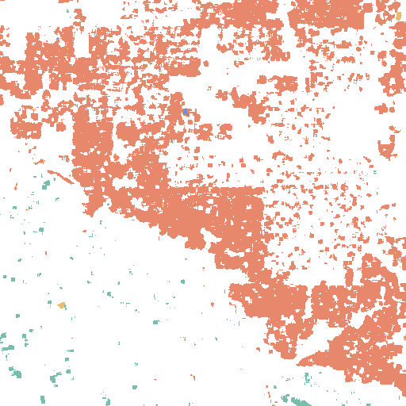
z004 · Descenso del eco — 16,83 km², Δ -3,6 dB, confianza baja. Recorte de 10.2 km.
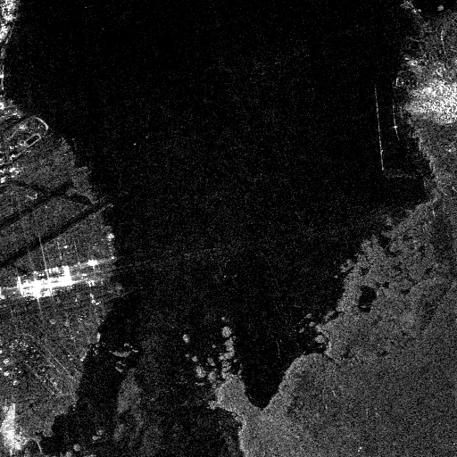
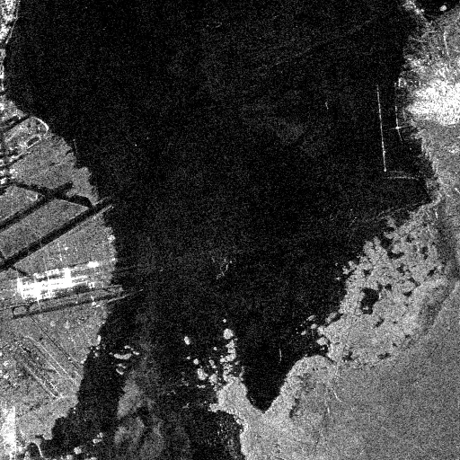
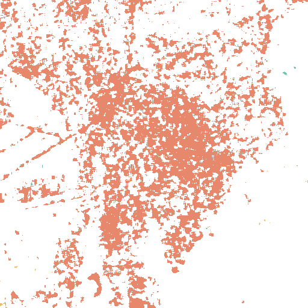
z005 · Descenso del eco — 6,95 km², Δ -3,5 dB, confianza baja. Recorte de 10.2 km.
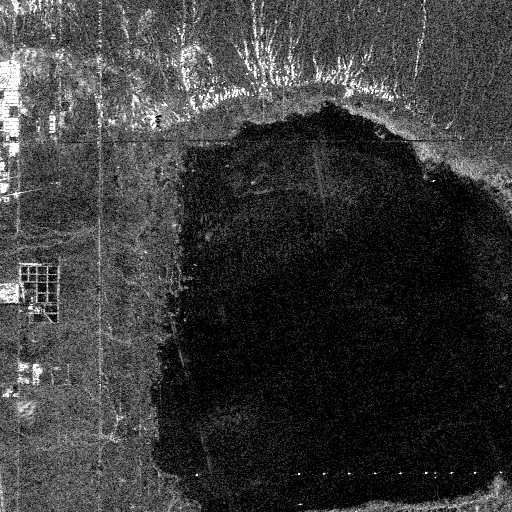
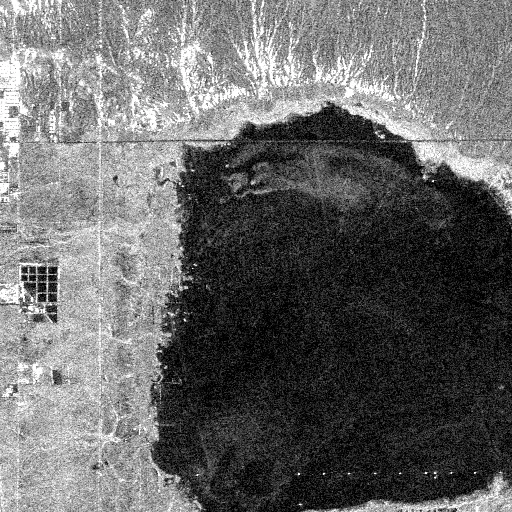
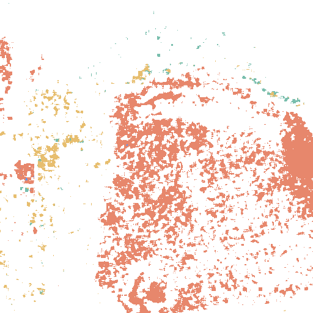
z006 · Descenso del eco — 4,36 km², Δ -3,5 dB, confianza baja. Recorte de 10.2 km.
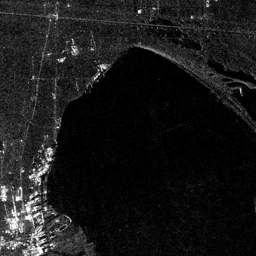
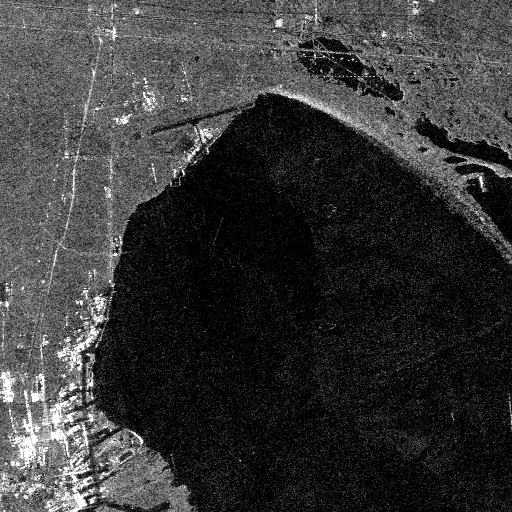
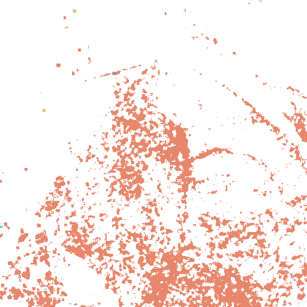
z007 · Descenso del eco — 4,13 km², Δ -4,0 dB, confianza media. Recorte de 10.2 km.
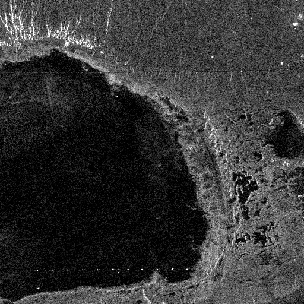
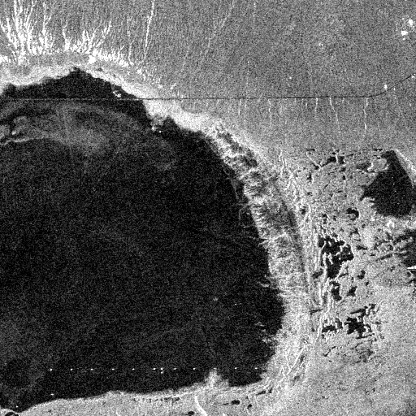
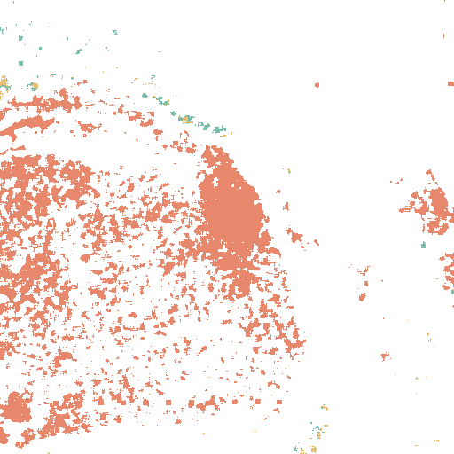
z008 · Descenso del eco — 2,67 km², Δ -3,6 dB, confianza baja. Recorte de 10.2 km.
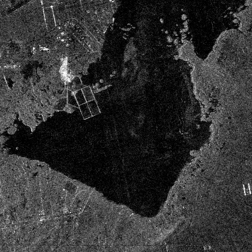
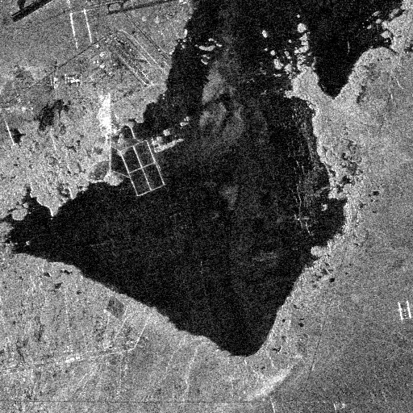
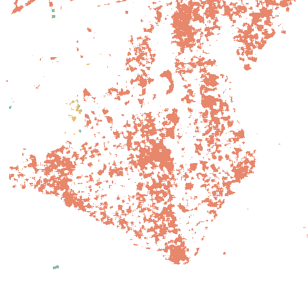
z009 · Descenso del eco — 2,59 km², Δ -5,0 dB, confianza media. Recorte de 10.2 km.
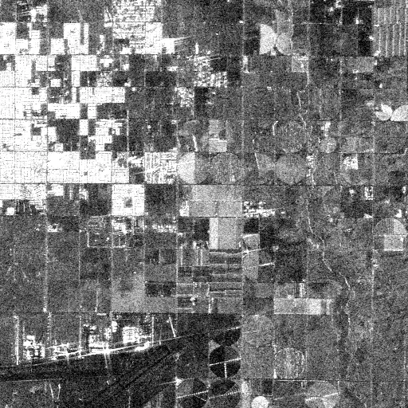
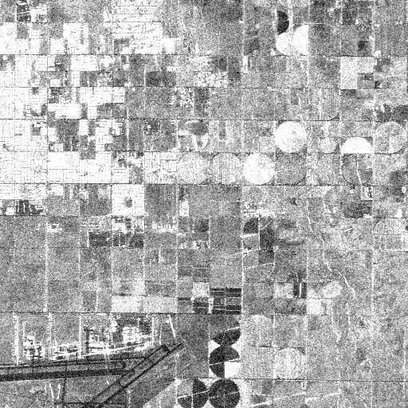
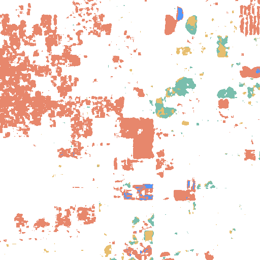
z010 · Descenso del eco — 1,93 km², Δ -3,4 dB, confianza baja. Recorte de 10.2 km.
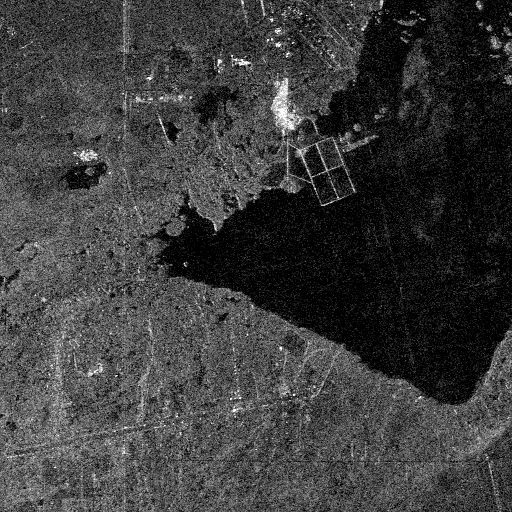
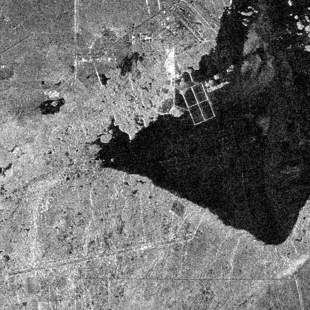
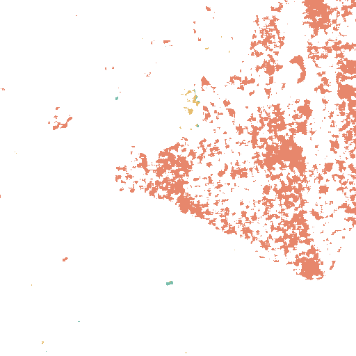
z011 · Descenso del eco — 1,74 km², Δ -3,5 dB, confianza baja. Recorte de 10.2 km.
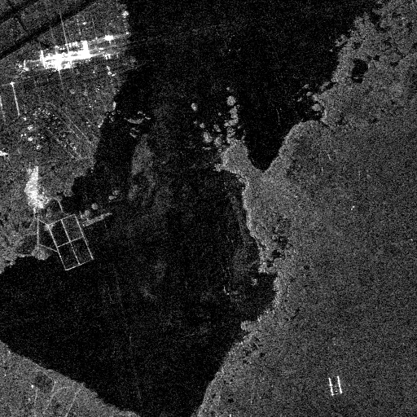
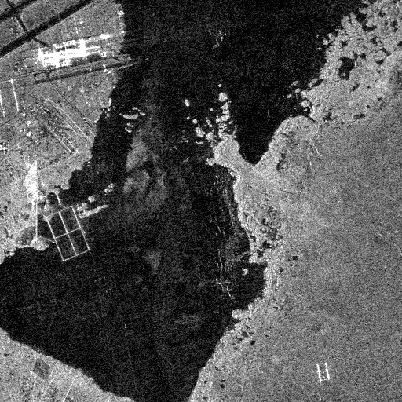
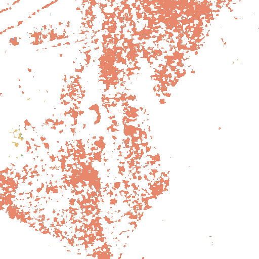
z012 · Descenso del eco — 1,60 km², Δ -4,1 dB, confianza media. Recorte de 10.2 km.
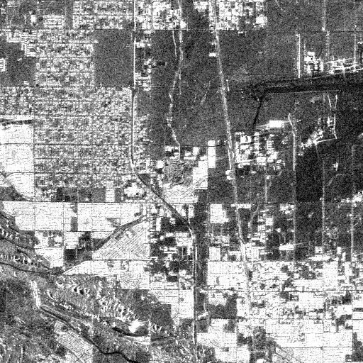
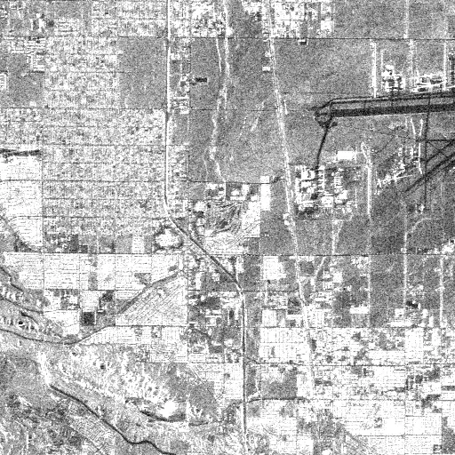
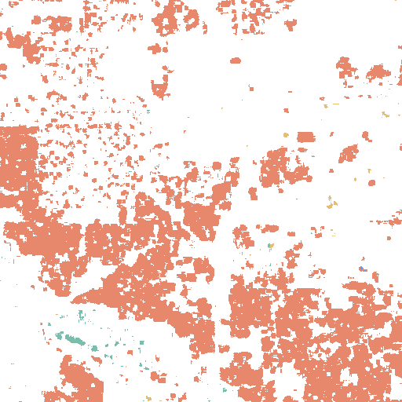
6. Escena y método
| Sensor | NISAR L-SAR (banda L), producto L2 GCOV, polarización HH |
|---|---|
| Pista / frame / órbita | 30 / 19 / Ascending |
| Mirada del radar | — |
| Polarizaciones (antes / después) | HHHH / HHHH |
| Gránulo antes | NISAR_L2_PR_GCOV_001_030_A_019_2800_SHNA_A_20081012T060911_20081012T060925_D00404_N_F_J_001 |
| Gránulo después | NISAR_L2_PR_GCOV_002_030_A_019_2800_SHNA_A_20081127T061000_20081127T061014_D00404_N_F_J_001 |
| Píxel / proyección | 20 m / EPSG:32611 |
| Extensión (lat, lon) | 34.2354, -118.4806 — 35.3649, -117.4737 |
| Generado | 2026-11-01T16:42:27Z |
- Filtro de speckle: media 5×5 en potencia lineal (unos 100 m), para quitar el granulado típico del radar.
- Diferencia píxel a píxel en dB: después − antes.
- Desplazamiento global (+4,08 dB): la mediana de la diferencia se resta, porque un cambio de humedad o calibración afecta a toda la escena y no es un cambio local.
- Clases: |Δ| > 3 dB. «Agua nueva» y «agua que desaparece» exigen además cruzar el umbral de agua (-15 dB).
- Zonas: clase dominante en bloques de 40 m, agrupada en manchas conexas de al menos 0.05 km².
- Confianza: alta si el área ≥ 0,5 km² y |Δ| ≥ 6 dB; media si el área ≥ 0,1 km² y |Δ| ≥ 3.75 dB; baja en el resto.
Límites
- Solo polarización HH. HV ayudaría a separar vegetación de suelo.
- Umbrales fijos: el de agua falla en desiertos y en agua con viento.
- Sin corrección de pendiente ni sombra: en montaña aparecen falsos cambios.
- Las imágenes se colocan en el mapa con su rectángulo lat/lon, sin reproyectar (error de pocos píxeles).
- Un cambio de radar es una señal, no una prueba: hay que contrastarlo con imagen óptica o sobre el terreno.
Generado con processing/nisar_informe.py · Datos NISAR: NASA/ISRO vía ASF DAAC · Prototipo, no es un sistema de alerta operativo.